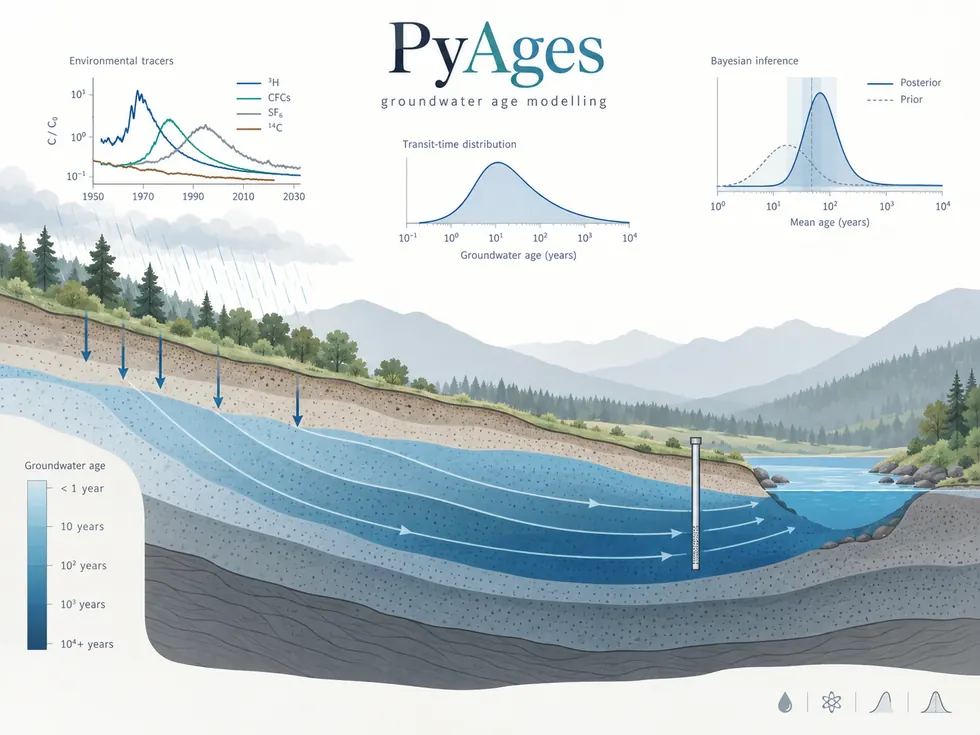

PyAges
PyAges is an open-source Python environment for modelling and interpreting groundwater ages from environmental tracers and lumped-parameter models (LPMs).
pyages.
Principle
Environmental tracers record the history of exchanges between the atmosphere, recharge and groundwater. PyAges links tracer input histories to observed groundwater concentrations through transit-time distributions. These distributions are represented by LPMs and integrated by convolution to simulate expected tracer concentrations.
The software architecture separates tracers, transit-time distributions, convolution operators and calibration methods. This makes it possible to combine different tracers and models while retaining reproducible and extensible workflows.
Calibration and uncertainty
PyAges supports deterministic fitting as well as Bayesian calibration, including Metropolis–Hastings. The aim is not only to identify an optimal parameter combination, but also to explore parameter uncertainty, correlations and model identifiability limits.
This is particularly useful when several parameter sets produce similar model responses, or when observations cannot independently constrain all parameters of a transit-time model.
Validation and reproducibility
The repository brings together the scientific core of the software, runnable examples, regression tests and validation cases. The campaigns used for the article are preserved separately so that published results can be linked precisely to the code and data that produced them.
The frozen scientific version for the manuscript is 1.0, archived on Zenodo and under the corresponding Git tag. The version currently distributed on PyPI is 1.0.1. Current repository and documentation development has moved to the 2.0 series.
Use
PyAges is distributed through PyPI. After installation, the library is imported as pyages, and a command-line interface with the same name is available to check the installation, list models and tracers, and run configured workflows.
python -m pip install pyagesArticle and citation
J.-R. de Dreuzy, S. Leray & J. Marçais (2026), software and manuscript submitted to Geoscientific Model Development.
The scientific archive for version 1.0 is available on Zenodo under DOI 10.5281/zenodo.22150863.